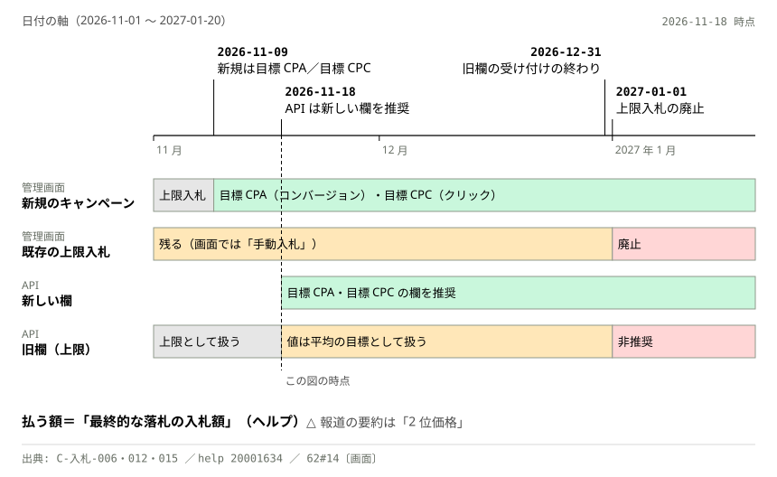

[ ChatGPT / 02 ]
02入札と予算
位置づけ: 目的と課金、入札戦略、払う額の決まり方、目標値の置き方、予算の動き方、配信されないときの点検、「学習」に当たるものを引くメモ。Google の ../Google広告の基礎/02_自動入札と予算.md（以下 G02）に当たる。全体の地図は 00_全体像.md §3、画面で見たことは 62_管理画面で確かめたこと.md
このメモについて
- 確認日: 2026-11-18（help.openai.com の入札・予算・コンバージョン最適化・キャンペーン作成・基本・トラブルシューティング・FAQ・広告グループ作成・入稿の手順の各ページを、Claude のアプリ内のブラウザ（自分専用のタブ）で本文まで読んだ。入札のページは英語版と日本語版の両方。developers.openai.com/ads/llms-full.txt（開発…
- 位置づけ: 目的と課金、入札戦略、払う額の決まり方、目標値の置き方、予算の動き方、配信されないときの点検、「学習」に当たるものを引くメモ。Google の
../Google広告の基礎/02_自動入札と予算.md（以下 G02）に当たる。全体の地図は00_全体像.md§3、画面で見たことは62_管理画面で確かめたこと.md - 使い方: この媒体は月に何度も仕様が変わる。確認日から 2 週間を過ぎたら、末尾の出典（とくに S-36 の入札のページ）を取り直してから使う。各ページの「更新」は 2026-11-18 に見た相対表示（例「11 日前」）から日付を逆算して書いた
- 凡例: ✓ 公式で確認 ／ △ 資料によって食い違う ／ ? 確認できず
- 主張の出どころの印: 公式OpenAI のヘルプ・開発者文書・ポリシー・公式ブログ ／〔報道〕〔第三者〕／〔推測〕書き手の推測
地図
本文
0.先に結論
- 01
目的は 3 つ、課金は 2 つ。 表示（Views、CPM）、クリック（Clicks、CPC）、コンバージョン（最適化は成果、課金は有効なクリック＝oCPC か 1,000 表示＝oCPM を選ぶ）。成果ごとに払う方式は無い ✓ S-34・S-37（本文）
- 02
入札戦略は 2026-11-09 に入れ替わった。 新規はインテリジェント入札（旧称 Maximize Results／成果の最大化（自動入札））・目標 CPA・目標 CPC。旧来の上限入札額（Max Bid）・上限 CPC（Max CPC）は既存のキャンペーンだけで、2027-01-01 に終わる。画面では旧方式が「手動入札」と表示される ✓ S-36（本文、2026-11-07 ごろ更新）、〔画面〕62#14
- 03
目標 CPA・目標 CPC は「平均の目標」で上限ではない。 システムは 1 回ごとに目標より高くも低くも入札する。請求額でもない ✓ S-36
- 04
払う額は「最終的にオークションで落札した入札額」とヘルプは書く。どの入札戦略でも同じ。 2 位価格かどうかは公式のどこにも書かれていない。技術ブログ（日本語版の本文）もオークションが「価格設定」をすると書くだけ（§4）✓／△
- 05
目標値は「同じ成果の直近の実績」から置くのが公式の手順。実績より低い目標は配信を絞る。Meta のような「平均より 10〜20% 緩く」という数字は無い ✓ S-36。「CPC は 3〜5 ドルから」は古い記述で、旧方式（上限 CPC）を前提にした基本のページにだけ残っている △ S-31
- 06
1 日の予算は 7 日（日曜〜土曜、アカウントの時間帯）の平均。 1 日は 2 倍まで、7 日は 7 倍まで。週の枠を早く使い切ると、「有効」のまま週末まで止まる ✓ S-34・S-35
- 07
予算の種類の変更は片道。 通算（キャンペーン合計）→ 1 日はできるが、戻せない ✓ S-34、S-01。日本円の最低の 1 日の予算は 2,500 円 ✓ S-34
- 08
「学習期間」の定義・表示・日数は公式に無い ?。 公式の語は「キャンペーンの学習が進む中で」「信頼できるデータがシステムの学習を助ける」まで。待つ目安として書かれているのは「立ち上げから最低 24 時間」（配信ゼロの報告の前に）と「低入札の警告は広告グループの変更から 24 時間出ない」だけ ✓ h20001217、S-01
1.Google との対比（G02 と）
- クリックか表示
- デマンド ジェネレーション専用
- クリック目的の標準
- （30.4 倍） |
- 通算 → 1 日はできるが逆はできない
| 観点 | Google 広告（G02） | ChatGPT の広告 | 運用の判断への効き方 |
|---|---|---|---|
| 目的と課金の関係 | 入札戦略ごとに課金はほぼクリック（検索）。成果に最適化しても請求はクリック | 目的（キャンペーン）と課金（広告グループ）が別の設定。コンバージョン目的でもクリックか表示で払う ✓ S-37、S-01 | 「CPA 課金」と説明しない。費用 ÷ 成果で自分で CPA を出す |
| 入札戦略の種類 | スマート自動入札 4 種（コンバージョン数の最大化、目標コンバージョン単価、コンバージョン値の最大化、目標広告費用対効果）＋クリック数の最大化・目標インプレッション シェア・個別クリック単価 | インテリジェント入札（クリックかコンバージョンを予算内で最大化）、目標 CPA、目標 CPC、旧来の上限入札（2027-01-01 まで）✓ S-36 | 価値（売上額）に最適化する戦略（目標 ROAS に当たるもの）は ? 公式に記載なし |
| 同じ名前で意味が違うもの | 目標クリック単価（Target CPC）はデマンド ジェネレーション専用で検索には無い | 目標 CPC はクリック目的の標準の戦略 ✓ S-36 | Google の検索の経験で「目標 CPC は無い」と思わない |
| 「手動」 | 個別クリック単価 | 旧来の上限入札額・上限 CPC が画面で「手動入札」と出る 〔画面〕62#14。新規では作れない ✓ S-36 | 2027-01-01 までに目標 CPA／CPC へ移す |
| 目標値の初期値 | 推奨は過去 30 日の平均成果単価（成果までの遅れを補正）。履歴が無ければ事業の目標から | 同じ成果の直近の実績 CPA（または CPC）を、集計期間をそろえ、報告の遅れを見込んで見る ✓ S-36。数字の推奨値は無い（コンバージョン目的の入札額の推奨は「今は無い」✓ S-37） | 考え方は Google とほぼ同じ。違いは「自動で出る推奨値」が無いこと |
| 払う額 | 下限値を満たし、1 つ下の競合の広告ランクを上回るのに最低限必要な額（../Google広告の基礎/01_オークションと品質スコア.md §3） | 「最終的にオークションで落札した入札額が支払う価格」✓ S-36。2 位価格の説明は無い △ | 上限 CPC で入れているなら「平均 CPC ≒ 上限 CPC」になっていないかを見れば、仕組みの見当がつく〔推測〕（§4-3） |
| 学習の表示 | 「学習中」最長 7 日。予算・目標値・広告文・ターゲティングの変更では出ない | 学習の表示・期間の定義は ?。低入札の警告が変更後 24 時間出ないだけ ✓ S-01 | 待つ日数は自分で決める（§9） |
| 1 日の上振れ | 1 日の平均予算の 2 倍 | 2 倍（同じ）✓ S-35 | 同じ |
| 平均する期間 | 月（30.4 倍） | 週（日曜〜土曜、7 倍）✓ S-35 | 月末の締めは週の境目を見る。週の途中の変更は次の日曜 0 時まで按分 |
| 期間の総額の予算 | キャンペーンの合計予算（3〜90 日）。日予算からの切り替え不可 | 通算（キャンペーン合計）の予算。通算 → 1 日はできるが逆はできない ✓ S-34、S-01 | Google と向きが逆。迷ったら 1 日の予算で始める（公式もそう勧める） |
| 共有予算・ポートフォリオ | 共有予算、ポートフォリオ入札戦略あり | ? 公式に記載なし。別の予算が要るならキャンペーンを分ける ✓ S-01 | 予算はキャンペーンごとに持つ |
| 入札単価調整 | デバイス・地域・時間帯など（スマート自動入札ではデバイスの −100% だけ。目標コンバージョン単価のデバイス調整は目標値を動かす） | カスタム オーディエンス別の倍率だけ（0.1〜10 倍）。目標 CPA では目標を動かす（50 ドル × 1.2 = 60 ドル）✓ S-36、h20001346。△ 開発者文書は「固定の入札だけ」 | 地域・端末・時間帯で入札を変える手段は ? 無い。分けたいならキャンペーンを分ける〔推測〕 |
| 自動で出る診断 | 入札戦略のステータス（制限付き など） | 低入札の警告（bid_too_low）、配信の問題（serving_issues）、イベント品質スコア（EQS）✓ S-01、S-36 | 警告が無くても入札が十分とは限らない（公式がそう書く） |
2.目的と課金

コンバージョン目的でも払うのはクリック（oCPC）か 1,000 表示（oCPM）で、成果ごとには払わず、oCPM は表示からの成果にも最適化する。目的・イベント・課金方法は作った後に変えられないので、計測が動く前と後で別のキャンペーンに分けて作る。
出典: C-入札-001・C-入札-002・C-入札-003 ほか 8 件 · 2026-11-18 時点
- 有効なクリック（oCPC）か 1,000 表示（oCPM）を選ぶ
- クリックの後
- 表示とクリックの両方
- クリックを選ぶと成果は少なくなる
- クリック課金のコンバージョン キャンペーンを表示課金に移すには、キャンペーンを複製（Clone）して表示を選ぶ
- 同じ目的のまま複製はできない
2-1.3 つの目的 ✓公式S-34（本文、2026-11-12 ごろ更新）、S-01
| 目的（画面・ヘルプ） | API の値 | 課金 | 何に最適化するか |
|---|---|---|---|
| 表示（Views。基本のページでは Reach） | impressions | 1,000 表示ごと（CPM） | 広い配信・露出 |
| クリック（Clicks） | clicks | 有効なクリックごと（CPC） | サイトへのクリック |
| コンバージョン（Conversions。ヘルプの見出しは Conversion optimization） | conversions | 有効なクリック（oCPC）か 1,000 表示（oCPM）を選ぶ。成果ごとには払わない | 選んだ 1 つの標準コンバージョン イベント |
- ✓ キャンペーンには「タイトル、目的、コンバージョン イベント（コンバージョン目的のとき）、予算、開始日・終了日、対象の国、対象の端末（任意）、含める・除くカスタム オーディエンス（任意）」がある（S-34）
- ✓ 目的は作成後に変えない。別の目的にしたいときは新しいキャンペーンを作る（S-34、S-01「CPM・CPC のキャンペーンを oCPC に変えることはできない」）
2-2.コンバージョン目的の 2 つの課金 ✓公式S-37（本文、2026-10-20 ごろ更新）
| 課金 | 払うもの | 最適化の対象 | 主に見る指標 |
|---|---|---|---|
| クリック（oCPC） | 有効なクリック | クリックの後に起きた成果 | 平均 CPC と、成果の数 |
| 表示（oCPM） | 表示 1,000 回 | 表示とクリックの両方から生まれた、より広い成果 | 平均 CPM・表示回数と、成果の数・成果単価・クリックスルーとビュースルーの成果 |
- ✓ ヘルプは「表示を選ぶと、表示とクリックから生まれる成果を含め、より多くの成果に最適化する。クリックを選ぶと成果は少なくなる」と書く（S-37）。理由として「広告を見て、あとで戻って成果に至る人がいる」を挙げる
- ✓ 目的と課金方法は作成後にその場では変えられない。クリック課金のコンバージョン キャンペーンを表示課金に移すには、キャンペーンを複製（Clone）して表示を選ぶ。それ以外の変更は新しいキャンペーンを作る（S-37）
- ✓ 複製は「別の目的か、対応する別の課金方法」の新しいキャンペーンを作る機能で、同じ目的のまま複製はできない（例: クリックのキャンペーンをクリックのまま複製できない）（S-34、2026-11-12 ごろ更新）。→ 94#20 の △（「複製できない」と「複製で移る」の食い違い）は、複製は目的か課金を変えるときだけ使えるという形で両立する
- △ S-37 には「既存のキャンペーンをコンバージョン目的に移すには、複製して表示を選ぶ」という文もある。クリック目的から移す場合にも「表示」と読める書き方で、上の課金の話と混ざっている可能性がある〔推測: 文面の誤り〕。画面で複製の選択肢を見るまで、どちらとも決めない
- △ 開発者文書は oCPM を載せていない。 API の組み合わせの表は
conversions×clickだけで、「コンバージョン キャンペーンは有効なクリックで課金する」と書く（S-01、2026-11-18 取得）。API で oCPM を作れるかは ? - ✓ 成果ごとの請求は無い。目標 CPA（旧方式では Bid Cap）は「入札の材料」で、成果の料金ではない（S-37、S-36、S-01）
2-3.目的ごとの条件 ✓公式
- コンバージョン目的: アカウントでコンバージョン入札が有効になっていること（API では無効だと 403
Conversion bidding is not enabled）、ピクセルかコンバージョン API（両方でも可）の計測、標準イベントを 1 つ（カスタム イベントは不可）、イベントは作成後に変えられない（S-01、S-37） - 一括入稿では、商品フィードのキャンペーンにコンバージョン目的を使えない（S-42、本文）
- 商品フィードのキャンペーンは表示・クリック・コンバージョンのどれも使える。コンバージョンはオープン ベータ（S-01）。広告グループの入札は「成果の最大化（Maximize results）」が既定で選ばれる（h20001268、本文、2026-11-11 ごろ更新）
- スポンサーのビジネス エージェントは、コンバージョン目的のキャンペーンにしか付けられない（「Enable agent chats」はコンバージョン目的で出る）（S-49、本文、2026-11-12 ごろ更新）。05 §9
2-4.運用の判断への効き方
〔推測〕。目的は後から変えられず、複製は「目的か課金を変える」ためにある（S-34）
（S-37）。ただし表示課金ではビュースルーの成果が評価に入るので、Google と比べる表ではビュースルーを分けて見る（00 §6-3、62#9）〔推測〕
ことを前提にする（S-01）。画面で作ったキャンペーンを API で読み書きするときは、課金の値を確かめてから触る〔推測〕
3.入札戦略（2026-11-09 に入れ替わった）

2026-11-09 から新規は目標 CPA／目標 CPC になり、上限入札（画面では「手動入札」）は 2027-01-01 に廃止、API の旧欄は 11-18 から値が「平均の目標」として扱われる。払う額はヘルプでは「最終的な落札の入札額」で報道の「2 位価格」とは食い違う（△）ので、既存の上限入札は年内に移し、自動化の道具が旧欄で何を送っているかを確かめる。
出典: C-入札-004・C-入札-005・C-入札-006 ほか 8 件 · 2026-11-18 時点
- インテリジェント入札
- 目標 CPA
- 目標 CPC
- 表示（Views）目的の入札がどうなるかは書かれていない
- 旧欄でキャンペーンを作る・入札の種類を変えると、目標 CPA／CPC が選ばれ、送った値は上限ではなく平均の目標として扱われる
- 開発者文書（2026-11-18 に取得した一括版）はまだ旧方式だけで書かれている
3-1.今の戦略 ✓公式S-36（英語版・日本語版の本文、2026-11-07 ごろ更新）
| 戦略（日本語ヘルプの名前／英語） | 使う目的 | 中身 | 新規で選べるか |
|---|---|---|---|
| インテリジェント入札（旧称: 成果の最大化（自動入札）／Intelligent bidding, formerly Maximize Results (Autobid)） | クリック・コンバージョン | 目標の単価を指定せず、予算内で成果を追う。個々の入札は管理しない | ✓ |
| 目標 CPA（目標アクション単価／Target CPA） | コンバージョン | 成果 1 件あたりに払いたい平均の額。システムが目標とコンバージョンのシグナルから入札と配信を動かし、予算内で成果を最大にしながら平均 CPA を目標に寄せる | ✓（2026-11-09 から。上限入札額の代わり） |
| 目標 CPC（目標クリック単価／Target CPC） | クリック | クリック 1 回あたりの平均の額。オークションごとに目標より上でも下でも入札できる | ✓（2026-11-09 から） |
| 上限入札額（Max Bid） | コンバージョン | オークションの入札額に上限を付ける旧方式 | ✕（既存だけ。2027-01-01 に終了） |
| 上限 CPC（Max CPC） | クリック | クリックの入札に上限を付ける旧方式 | ✕（既存だけ。2027-01-01 に終了） |
- ✓ 「目標 CPA を 50 ドルにすると、平均 50 ドルを目指す。高い成果も安い成果もあり、実際の平均も目標より上下しうる」（S-36）
- ✓ 2026-11-09 から広告マネージャーで新しい戦略へ移し始めるよう案内している。「キャンペーンに表示される、対応している移行手順に従う」（S-36）。画面には「上限入札額と上限 CPC は 1 月 1 日に廃止。11 月 9 日から、コンバージョン キャンペーンは目標 CPA へ、クリック キャンペーンは目標 CPC への移行を開始」と出ている 〔画面〕62#14
- ? 表示（Views）目的の入札がどうなるかは書かれていない。 終わるのは「上限入札額（コンバージョン）と上限 CPC（クリック）」で、表示目的の上限 CPM（基本のページ S-31 と入稿の手順 h20001209 は「Reach キャンペーンは上限 CPM」と書く）の扱い・目標 CPM の有無は S-36 に無い
- ? 価値（売上額）に最適化する戦略（目標 ROAS に当たるもの）は公式に記載なし。レポートには「注文完了に基づく ROAS」の列がある 〔画面〕62#7
3-2.API の移行 ✓公式S-36 の FAQ ／ △ S-01
| 時期 | API の扱い（S-36） |
|---|---|
| 2026-11-18 より前 | 上限入札額・上限 CPC の欄は従来どおり |
| 2026-11-18 から | 新しい目標 CPA・目標 CPC の欄を推奨。旧欄は 12-31 まで受け付けるが、旧欄でキャンペーンを作る・入札の種類を変えると、目標 CPA／CPC が選ばれ、送った値は上限ではなく平均の目標として扱われる |
| 2027-01-01 から | 旧欄は非推奨（使えなくなる） |
- △ 開発者文書（2026-11-18 に取得した一括版）はまだ旧方式だけで書かれている。 戦略は
fixed_bid（max_bid_microsを送る）・maximize_clicks・maximize_conversionsの 3 つ。変更履歴の最新は 2026-10-26（複数画像）で、目標 CPA／CPC の欄は無い（S-01）。今日（11-18）から推奨と書かれた新しい欄の名前は、公開の文書ではまだ確かめられない ? - ✓ 開発者文書の旧方式の要点（2026-11-18 時点、移行前の動き）: コンバージョン目的の
fixed_bidではmax_bid_microsがCPA の入札（例: 100,000,000 マイクロ＝100 ドルの CPA 入札）で、課金はクリック。表示目的のfixed_bidは1 表示あたりの額を送る（CPM 60 ドルなら 0.06 ドル＝60,000 マイクロ）。金額は通貨の 1 単位＝1,000,000 マイクロ（S-01） - ✓ 開発者文書: 広告グループの戦略は、同じ目的のまま「固定 ↔ 最大化」を切り替えられる。最大化には 1 日の予算が要り、
max_bid_microsとオーディエンスの倍率を外す。通算予算のキャンペーンは先に 1 日の予算へ変える（S-01） - ✓ 開発者文書: 複数画像の広告は、アカウントが「複数画像＋自動入札」に対応していなければ固定の入札で使う（S-01）
3-3.Google との違い
- Google の目標コンバージョン単価は「推奨値が自動で出る」「上限・下限はポートフォリオだけ」（G02 §2〜3）。ChatGPT は推奨値が無く、上限・下限を付ける手段も新方式には無い ?
- Google では「目標クリック単価」が検索に無いが、ChatGPT ではクリック目的の標準。名前が同じでも置き場所が違う
3-4.運用の判断への効き方
〔推測〕。公式はインテリジェント入札を「平均の単価の目標を決めずに、予算内で成果を追わせたいとき」に勧める（S-36）
2027-01-01 以降の扱い（自動で移るのか止まるのか）は書かれていない ?。移す日を決め、移す前後で週単位の数字を比べる〔推測〕
11-18 以降、旧欄で作った値は「平均の目標」に意味が変わる（S-36）。上限のつもりで高めの値を送っていると、平均がその額に寄る〔推測〕
4.払う額の決まり方（何が言えて、何が言えないか）
- 最終的にオークションで落札した入札額が、支払う価格になる
- 支払う価格
- 実際の CPC はオークションが決める
- 関連性と広告主の入札額
- 品質を加味したランキング、価格設定
- 広告を直接決めたり価格を付けたりしない
4-1.公式が書いていること ✓
| 出どころ | 書いてあること |
|---|---|
| S-36 入札のページ（英語版・日本語版の本文） | 「どの広告が表示されるかはオークションで決まる。最終的にオークションで落札した入札額が、支払う価格になる（The final winning auction bid sets the price you pay）。この料金ルールは、上限入札額・上限 CPC の既存キャンペーンを含め、すべての入札戦略に当てはまる」 |
| S-36 | インテリジェント入札・目標 CPA・目標 CPC では、システムが「クリックやコンバージョンの発生確率と、支払う価格を考え合わせて」広告主に代わってオークションの入札額を決める |
| S-01 コンバージョン最適化（開発者文書） | oCPC は「選んだイベントと、広告の品質・関連性・クリックの見込み・成果の見込みを使う」。課金は有効なクリックだけで、実際の CPC はオークションが決める |
| S-37 | 実際の成果単価はオークションで決まる。旧方式の Bid Cap は「成果のために出してよい最大額」で、請求される成果の料金ではない |
| S-30（20001047、本文） | 候補が複数あるとき、関連性と広告主の入札額などを組み合わせて、どれを先に出すかを決める |
| S-18 技術ブログ（日本語版の本文、2026-10-21） | オークションは「参加資格の判定（関連性と価値の最低基準）、ペーシング（予算の均等な消化）、入札額とオークション用の特徴量の計算、品質を加味したランキング、価格設定、最終選定」を行う。LLM（オーケストレーター）は候補を選んでオークションに委ねるだけで、広告を直接決めたり価格を付けたりしない |
4-2.書かれていないこと ?（2026-11-18 時点）
S-36 の文は字面どおりなら「勝った入札額をそのまま払う」と読めるが、「2 位の入札額（＋品質の調整）を払う」とも「1 位価格」とも明言していない。S-18 の日本語版の本文に「2 位」「セカンド プライス」に当たる語は無い（書き手が本文を検索して確かめた）
S-18 は「品質を加味したランキング」と書くが、品質が価格にどう効くかは書かない
S-18 は「関連性と価値の最低基準」を参加資格として書くが、金額としての下限は無い
公式は「目標は平均で、個々は上下する」までしか書かない
△ 報道・第三者の要約（R-08）は「関連性で重みづけした 2 位価格」と書く。上の通り、公式の本文では確かめられない。どちらとも決めない
4-3.運用の判断への効き方
〔推測〕。システムが「支払う価格」も考えて入札を決めるので（S-36）、見るべきは実際の平均単価と成果の数
と、1 位価格に近いかどうかの見当がつく〔推測〕。張り付いていれば「上限＝ほぼ払う額」、大きく下回っていれば 2 位価格かそれに近い調整がある可能性。広告費を使わずに手元のレポートで確かめられる。結果は 62 に〔画面〕として記録する
公式に根拠が無い
5.目標値の決め方
- 同じコンバージョン イベントの直近の実績 CPA
- 集計期間をそろえ、成果が報告に反映されるまでの遅れを見込む
- 成果が事業にもたらす価値
- 直近の実績より低い目標は、配信を制限することがある
- キャンペーンの学習が進む中で
- 目標を 20 ドルにしても、実績の半分で買えるわけではない
5-1.公式の手順 ✓公式S-36「現実的な目標の設定」（本文）
- 1同じコンバージョン イベントの直近の実績 CPA
（クリック キャンペーンなら直近の実績 CPC）を見る。集計期間をそろえ、成果が報告に反映されるまでの遅れを見込む
- 2
直近の実績と、成果が事業にもたらす価値を比べる。直近の実績より低い目標は、配信を制限することがある
- 3
新しい戦略へ移すのに合わせて目標を置き・調整する。キャンペーンの学習が進む中で、消化額・成果・実際の平均単価を一緒に見る
- 4
例: 消化 400 ドルで、広告に帰属した購入が 10 件なら、その集計範囲の実績 CPA は 40 ドル。これと獲得の目標を出発点にする。目標を 20 ドルにしても、実績の半分で買えるわけではない
- ✓ 予算を使い切れないことがある理由として、「目標が厳しすぎる」「配信の機会が限られる」「コンバージョンのシグナルが弱いか欠けている」を挙げる（S-36 の FAQ）
- ✓ コンバージョン目的では、ピクセルかコンバージョン API を設定し、キャンペーンにつないだデータ ソースに実際のイベントが届いているかを確かめる。「設定しただけでは、使えるシグナルが届いているとは限らない」（S-36）
- ✓ イベント品質スコア（EQS）は、届いたイベント情報が計測にどれだけ役立つかを示す。成果の数（量）とは別で、スコアが高くても規模を広げるのに十分なシグナルがあるとは限らない。照合情報の不足・遅延・重複の警告を直す（S-36）
5-2.数字の目安は何があるか
| 目安 | 中身 | 状態 |
|---|---|---|
| 目標 CPA／CPC の推奨値 | 公式の数字は無い。手順（実績から）だけ | ✓ S-36 |
| コンバージョン目的の入札額の推奨 | 「今は推奨する入札額は無い」 | ✓ S-37（本文。ただしこのページは旧方式の Bid Cap で書かれたまま） |
| CPC の出発点 3〜5 ドル | 「CPC キャンペーンは上限入札を 1 クリック 3〜5 ドルから始めることを勧める」 | △ 基本のページ S-31（2026-11-15 ごろ更新）にだけ残る古い記述。同じページが「広告グループで上限入札（最大 CPM・最大 CPC）を設定する」と旧方式で書いている。入札のページ S-36（2026-11-07 ごろ更新）の本文には 3〜5 ドルの記述は無い（2026-11-18 に確認） |
| 日本円の目安 | 無い | ? |
| 業種・目的ごとの成績の基準値 | 「まだ広告主・業種・キャンペーンの種類をまたいだ成績の基準値は無い」 | ✓ S-33（FAQ、本文、2026-10-23 ごろ更新） |
| 入札の推奨と低入札の警告 | 「入札の推奨は見積もり、低入札の警告は実際のオークションの成績に基づく。だから両者は食い違うことがある。入札を上げても配信は保証されない」 | ✓ h20001217（本文、2026-11-12 ごろ更新） |
| 入札の強さの案内 | 広告マネージャーが、入札が競争力を持ちそうか、配信を絞りそうかの案内を出すことがある | ✓ S-31 |
5-3.Google・Meta との違い
- Google は推奨値（過去 30 日の平均、遅れを補正）が自動で出る。ChatGPT は手順だけで、数字は自分で出す
- Meta は「平均より 10〜20% 緩く」と数字で書く（
../Meta広告の基礎/02_入札と予算.md§3-1）。ChatGPT にそういう幅の数字は無い ?
5-4.運用の判断への効き方
〔推測〕。公式は「実績より低い目標は配信を制限する」と書くが、どれだけ緩めるかの数字は無い
〔推測〕。費用の反映は 7〜8 時間遅れ（S-31、h20001217）、成果は少なくとも 1 日待つ（00 §6-2）
シグナルが弱いと「配信が減り、予算が余る」と公式は書く（S-36）
〔推測〕。旧方式の文脈で、米ドルの、しかも上限入札の話
6.オーディエンス別の入札倍率
- いちばん高い倍率
- 運用の判断への効き方
- 地域・端末・時間帯の倍率は無い
| 項目 | 中身 | 出典 |
|---|---|---|
| 置き場所 | 広告グループの「詳細設定 > オーディエンスの入札調整」 | ✓ h20001346（本文、2026-10-20 ごろ更新） |
| 倍率の範囲 | 0.1〜10 倍（API は 100,000〜10,000,000 マイクロ） | ✓ h20001346、S-01 |
| 複数に当たる人 | いちばん高い倍率が使われる | ✓ h20001346、S-01 |
| 誰に出すかは変えるか | 変えない（倍率は入札だけを動かす。含めるのとは別） | ✓ h20001346、S-01 |
| 使えるオーディエンス | 照合後 25,000 人以上。公式の推奨は 10 万人以上。除外用の小さいオーディエンスは倍率に使えない | ✓ h20001346、S-01 |
| 目標 CPA との関係 | 「目標 CPA 50 ドルに新規顧客 1.2 倍なら、その層の目標は 60 ドル。これも平均の目標」（倍率が使える場合） | ✓ S-36 |
| 戦略との関係 | △ 開発者文書は「倍率は fixed_bid だけ。最大化では使えない」（S-01）。ヘルプ S-36（11-07 ごろ）は目標 CPA と倍率の組み合わせを例に挙げる | △ |
| 1 日の予算との関係 | 1 日の予算＋固定の入札のキャンペーンでは、1 日の予算を「倍率込みの実効の入札額の最高値」より下げられない。自動入札・通算予算には無い制約 | ✓ S-35（本文） |
- 運用の判断への効き方: Google の「入札単価調整」と違い、地域・端末・時間帯の倍率は無い（? 公式に記載なし）。倍率で動かせるのは顧客リストの層だけ。既存顧客に高く、休眠に低く、といった使い方になる〔推測〕。2027-01-01 以降に新方式で倍率がどう効くかは、S-36 の例（目標を動かす）を正とし、開発者文書が直るのを待つ
7.予算
- 7 日の平均
- インテリジェント入札は 1 日の予算が必須
- 総額の管理としてはこちらが厳しい
- 通算 → 1 日はできる。1 日 → 通算はできない
- 週は日曜〜土曜、アカウントの時間帯
- 1 日の途中で予算を変えたら、
7-1.2 つの持ち方 ✓公式S-34、S-01
| 種類 | 中身 | 向いているとき |
|---|---|---|
| 1 日の予算（Daily） | 7 日の平均で 1 日に使いたい額。日によって上下する | 配信と成果を見ながら進めたいとき。インテリジェント入札は 1 日の予算が必須（S-01）。公式は「初めてなら 1 日の予算で始め、配信と成果を見てから通算に」と勧める |
| 通算の予算（キャンペーン合計／Campaign-total、API では lifetime） | キャンペーンの全期間で使う総額。総額の管理としてはこちらが厳しい | 総額を固定したいとき。開発者文書は「固定の入札で使う」と書く |
- ✓ どちらか 1 つ。両方は持てない（S-01）
- ✓ 通算 → 1 日はできる。1 日 → 通算はできない（その場合は新しいキャンペーン）。「予算の種類の変更には戻せないものがある」（S-34、S-01）
- ✓ 通算の予算は、すでに使った額より下げられない（S-01）
- ✓ 予算の額の変更は「足す」ではなく「置き換え」（75 ドルに変えると 75 ドルになる）（S-01）
7-2.1 日の予算の動き方 ✓公式S-35（本文、2026-10-29 ごろ更新）、S-34

1 日の予算は 7 日（日曜〜土曜、アカウントの時間帯）の平均で、1 日は 2 倍・週は 7 倍まで使われ、週の枠を使い切ると「有効」のまま次の日曜まで止まる。少額のテストは週の累計で見て週の途中で予算を大きく上げない（各日の額は例、5,000・17,500 円は 2 倍・7 倍の計算、請求は UTC）。
出典: C-予算-002・C-予算-003・C-予算-004 ほか 10 件 · 2026-11-18 時点
表で見る（8 行。上の図のもとの表）
| 決まり | 中身 |
|---|---|
| 平均の期間 | 7 日。週は日曜〜土曜、アカウントの時間帯。使い残しは同じ週の後の日に回ることがある |
| 1 日の上限 | 予算の 2 倍。1 日の途中で予算を変えたら、その日に有効だった最も高い予算の 2 倍 |
| 7 日の上限 | 予算の 7 倍。週の途中で変えたら、最後の変更の時点から次の日曜 0 時まで按分 |
| 例 | 1 日 100 ドルで 7 日なら、7 日の上限は 700 ドル。100 ドルを超える日も下回る日もある |
| 既存のキャンペーン | 自動でこの方式になった。作り直し不要 |
| 画面 | 作成・編集のときに、1 日と 7 日の上限額が表示される |
| 週の枠を使い切ったとき | 「有効」の表示のまま、次の予算週まで配信が止まることがある（S-34、2026-11-12 ごろ更新）。h20001217 も「週の枠を早く使うと週の後半に止まる」と書く |
| 終了日が無いとき | 同じ 1 日・7 日の上限が続く |
7-3.通算の予算の動き方 ✓公式h20001217
- 配信のペースが先行していると、配信が遅くなることがある
- 予算か終了日を変えると、残りの額と残りの期間でペースを計算し直す
- 1 日の最低額があるため、実際にペースを配る期間が短くなることがある。終了日を決めても、均等に使われる保証は無い
7-4.最低額と下限の制約 ✓公式S-34（最低額の表、本文）、S-35
| 通貨（抜粋） | 最低の 1 日の予算 |
|---|---|
| 日本円 | 2,500 円 |
| 米ドル | 25 ドル |
| ユーロ・英ポンド | 15 |
| 韓国ウォン | 25,000 |
| 台湾ドル | 360 |
| シンガポール ドル | 25 |
- ✓ 表には 38 の通貨が載っている（2026-11-18 時点）。開発者文書は「最低額は通貨ごと。下回るとエラーで必要額を返す」（S-01）
- ✓ 1 日の予算＋固定の入札では、1 日の予算を倍率込みの実効の入札額の最高値より下げられない（例: 実効の入札 250.50 ドルなら、それより下げられない。全体の最低額ではない）（S-35）
7-5.日付と時間帯の注意
- ✓ 一括入稿では、開始日も終了日も「その日の 0 時（UTC）」を意味し、終了日はその日を含まない。10 月 10 日まで出すなら終了日は 10 月 11 日（S-42、本文）
- 〔推測〕UTC の 0 時は日本時間の 9 時。一括入稿で終了日を 10-11 にすると、日本時間 10-11 の 9 時に止まる計算。画面で作るときも同じかは ?
- 〔画面〕画面の時間帯は日本標準時だが、表の下に「請求では UTC を使用します」と出る（62#12）。予算の週はアカウントの時間帯（S-35）。予算の区切りと請求の区切りがずれる可能性がある〔推測〕
- ✓ 最初のキャンペーンでは、公開する前に開始日・終了日の欄が出ないことがある。 日付を決めたいときに「設定を見るためだけに公開しない」。公開すると予定より早く配信が始まりうる（S-34）。サインアップの流れで作った広告は「審査が通ると配信が始まる」、費用も発生しうる（S-39、本文）
7-6.アカウントの上限 ✓公式S-33（FAQ）、S-01
- 後払いの請求書のアカウントは「請求 > アカウントの上限」で1 日の上限を置ける。全キャンペーンで共有し、アカウントの時間帯の 0 時に戻る。新しい上限は翌日から。配信のペースを作ったり、キャンペーンに配分したりはしない。1 日の上限と期間の上限は重ねられない
- 期間を区切った上限は一部のアカウントだけ。キャンペーンの予算とは別に効き、キャンペーンの予算を上げてもアカウントの上限は越えない
- カード払いのセルフサーブでは 1 日のアカウントの上限は使えない（94#16、S-38）
7-7.Google との違い
- Google は「月 30.4 倍」で平均する。ChatGPT は「週 7 倍」。月末に予算を寄せて使い切る運用は、週の境目（日曜 0 時、アカウントの時間帯）で上限が切れる
- Google のキャンペーンの合計予算は日予算から切り替えられない。ChatGPT は通算 → 1 日はできるが戻れない。向きが逆
- Google の共有予算に当たるものは ? 公式に記載なし
7-8.運用の判断への効き方
7 日の上限は 17,500 円、1 日は最大 5,000 円〔推測: 計算〕。月の総額は Google ほど読みやすくない（週単位で按分されるため）
週の前半に大きく上げると、週の後半に止まりやすい〔推測〕
通算から 1 日には移れるが、迷いが残るなら最初から 1 日の予算（公式もそう勧める）
公式は「コンバージョン最適化のキャンペーンでは、予算を使い切ることではなく成果を良くすることを目指す」と書く（S-33）
8.配信されないときの点検
- 立ち上げから最低 24 時間
- 事業者の確認と請求の設定
- ブランド名を変えると、ブランド審査が通るまで配信が止まる
- コンバージョン目的なら、入札がクリックではなく成果の額になっているか
- 広告グループの変更から 24 時間は出ない
- 警告が無いことは入札が十分な証拠ではない
8-1.公式の点検の順番（ヘルプと開発者文書を合わせた）✓
| 順 | 見るところ | 中身 | 出典 |
|---|---|---|---|
| 0 | 待つ | 立ち上げから最低 24 時間は、はっきりした障害が無ければ配信ゼロの報告をしない。表示・クリック・CTR は約 15 分ごと、費用は約 7〜8 時間遅れ、CPC・CPM は確定した費用から後で出る | h20001217 |
| 1 | アカウント | 有効か。ブランド審査とアカウントの審査が済んだか。事業者の確認と請求の設定が済んで支払い方法が有効か。費用の上限を使い切っていないか | S-01、h20001217、S-33 |
| 2 | 名前の変更 | ブランド名を変えると、ブランド審査が通るまで配信が止まる。法人名の変更は事業者の審査をやり直し、止まることがある。アカウント名は審査なし | h20001217、S-39 |
| 3 | キャンペーン | 有効か。今日が開始日〜終了日の中か。予算（今日と今週の両方）が残っているか。対象の国が「配信できる国」を含むか（新しいアカウントは自国だけのことがある） | h20001217、S-34 |
| 4 | 広告グループ | 有効か。入札の戦略が目的と合っているか。コンバージョン目的なら、入札がクリックではなく成果の額になっているか。低入札の警告 | h20001217、S-01 |
| 5 | 広告 | 有効で承認済みか（「配信中」の表示）。「配信停止」ならカーソルを当てて理由を見る | S-33、h20001217 |
| 6 | 組み合わせ | 地域・端末・含めるオーディエンス・除外を一緒に見る。大きなリストでも照合と除外のあとで少なくなる。文脈ヒントは配信の条件ではない | S-01 |
| 7 | 計測（コンバージョン目的） | 実際のイベントが届いているか。EQS の警告 | S-36 |
- ✓ 「
serving_issuesが空でも表示の約束ではない」。機会が少ない、ターゲティングが狭い、入札が弱い、使える商品が少ない、のどれもありうる（S-01） - ✓ 「入札を上げても、止まったキャンペーン、使い切ったアカウントの上限、不承認の広告は直らない」（S-01）
- ✓ 低入札の警告は、無効な広告グループには出ず、広告グループの変更から 24 時間は出ない（広告だけの変更では時計は戻らない）。警告が無いことは入札が十分な証拠ではない（S-01）
- ✓ 「変えたことと時刻を記録し、同じ範囲・同じ時間帯で比べる。どの変更が効いたか知りたいなら、一度に複数を変えない」（S-01）
- ✓ 「設定が変わっていないのに配信が落ちたら、目的・入札・計測の設定と、落ち始めた時期をサポートに伝える」。ベータの間は、配信システムやモデルの改善で配信と費用が揺れる（h20001217、S-33）
8-2.Google との違い
- Google は入札戦略のステータス（制限付き など）で理由が出る。ChatGPT は警告（低入札）と配信の問題の一覧と、審査の表示だけ
- Google には「予算の週」が無い。ChatGPT では予算が残っているように見えても、週の枠が尽きていれば止まる
8-3.運用の判断への効き方
（公式の目安）。費用の 0 円は課金が無い証拠ではない（S-31）
この媒体に固有の止まり方が多い
を見る（h20001217 が名指しする）
9.「学習」に当たるもの
- キャンペーンの学習が進む中で
- システムが学習
- 待つ日数は自分で決める
- 週の境目（日曜）をまたいだ 7 日
- Google の「学習期間は 2 週間」「7 日」を持ち込まない
9-1.公式に書いてあること（全部）✓
| 出どころ | 書いてあること |
|---|---|
| S-36 | 「キャンペーンの学習が進む中で、消化額・成果・実際の平均単価を一緒に見る」（日本語版の語）。「信頼できるコンバージョン データは、どの配信機会が成果につながりやすいかをシステムが学習し、配信を最適化するのに役立つ」 |
| S-37 | 「意味のある成績のデータを集めるのに十分な期間と予算を」。「頻度の低すぎるイベントは成績の評価を難しくする」。「大きな変更の前に十分な量を見る」 |
| S-01 | 「評価に十分な量のあるイベントを使う」「大きな変更の前に十分な量を見る」「数分の動きを何度も見るのではなく、適切な期間で比べる」 |
| S-01 | 低入札の警告は広告グループの変更から 24 時間出ない |
| h20001217 | 立ち上げから最低 24 時間は待つ。配信はコンバージョンの最適化の改善で揺れることがある |
| S-33 | ベータの間はモデルの改善で配信・費用が揺れる |
| S-18 | 広告の採点に「過去の実績（これまでの表示で良い成果だったか）」を使う。高性能のモデルが結果を評価して小さいモデルを学習させる「自己改善のループ」 |
9-2.書かれていないこと ?
- 「学習中」に当たる表示、学習期間の日数、学習を終えるのに要る成果の件数（Google の「最長 7 日」、Meta の「50 件」に当たるもの）
- どの変更で学習がやり直しになるか（Google は「予算・目標値の変更では学習中にならない」と書き、Meta は「変更の大きさしだい」と書く）
- 新しい広告・新しい広告グループが成績を得るまでの期間
9-3.運用の判断への効き方
〔推測〕。決め方の材料は公式にある遅れだけ: 費用 7〜8 時間、成果は少なくとも 1 日（00 §6-2）、立ち上げ 24 時間、低入札の警告 24 時間、クリックの計測期間（既定 30 日、62#8）
〔推測〕目安の案: ①立ち上げから 24 時間は触らない ②入札・予算・目標の変更は 1 回に 1 つ、週の境目（日曜）をまたいだ 7 日で比べる（予算が週で平均されるため）③成果の評価は計測期間の窓をそろえ、直近 1〜2 日を除く。
この媒体の公式の数字ではない
10.よくある思い込みと実際
思い込みコンバージョン目的なら成果ごとに課金
実際有効なクリック（oCPC）か 1,000 表示（oCPM）。成果ごとには払わない
印と出典: ✓ S-37、S-34
思い込み目標 CPA は 1 件の上限
実際平均の目標。個々は上下し、実際の平均も上下する
印と出典: ✓ S-36
思い込み「上限 CPC」で新しく組める
実際2026-11-09 から新規は目標 CPC／目標 CPA。旧方式は既存だけで 2027-01-01 に終わる
印と出典: ✓ S-36、〔画面〕62#14
思い込みAPI の文書が正しい（いちばん新しい）
実際2026-11-18 時点の開発者文書はまだ旧方式（fixed_bid）だけ。ヘルプが先に変わっている
印と出典: △ S-01、S-36
思い込み2 位価格なので高めの上限でも損しない
実際公式は「落札の入札額が支払う価格」と書くだけで、2 位価格とは書かない
印と出典: △ S-36、S-18
思い込みCPC は 3〜5 ドルから始める
実際旧方式の文脈で残った古い記述（S-31）。入札のページ（S-36）には無い。日本円の目安は無い
印と出典: △ S-31、S-36
思い込み目標は低く置けば安く取れる
実際実績より低い目標は配信を絞る。「20 ドルにしても半額で取れるわけではない」
印と出典: ✓ S-36
思い込み1 日の予算はその日の上限
実際7 日の平均。1 日は 2 倍、週は 7 倍まで
印と出典: ✓ S-35
思い込み予算が残っていれば配信される
実際週の枠を使い切ると「有効」のまま次の週まで止まる
印と出典: ✓ S-34、h20001217
思い込み通算の予算で始めて、あとで 1 日に戻せばよい／その逆も
実際通算 → 1 日はできる。1 日 → 通算はできない
印と出典: ✓ S-34、S-01
思い込み同じキャンペーンを複製して分ければよい
実際複製は「別の目的か別の課金」を作るときだけ。同じ目的のままの複製はできない
印と出典: ✓ S-34
思い込み地域・端末・時間帯で入札を上げ下げできる
実際倍率はカスタム オーディエンスだけ
印と出典: ✓ h20001346、S-01（地域等は ? 記載なし）
思い込み学習期間が終わるまで 7 日待つ
実際学習期間の定義・日数は公式に無い
印と出典: ?
思い込み費用 0 円なら課金されていない
実際費用は 7〜8 時間遅れる
印と出典: ✓ S-31、h20001217
11.判断の型
11-1.目的と入札を選ぶ
計測（ピクセル・コンバージョン API）が動いていて、実際のイベントが届いているか
いいえならクリック目的（インテリジェント入札か目標 CPC）
はいで、選ぶ成果が十分な頻度で起きるか
いいえならクリック目的のまま、成果が貯まるのを待つ〔推測〕
はいならコンバージョン目的を新しいキャンペーンで。課金は、公式の言い分なら表示（oCPM）が成果は多い。ビュースルーを評価に入れたくないならクリック（oCPC）〔推測〕
目標の単価を言えるか
言えないならインテリジェント入札、言えるなら直近の実績から目標 CPA／CPC（§5）
ビジネス エージェントを使うなら、コンバージョン目的が前提（S-49）
11-2.予算を選ぶ
初めての口座・初めての目的
1 日の予算（2,500 円以上）
総額を絶対に超えたくない短期の施策
通算の予算（ただしインテリジェント入札は使えない。S-01）
月の予算を守りたい
週 7 倍の枠で逆算し、週の途中で大きく上げない
11-3.週次の点検〔推測〕
- 1今週の枠の残り、平均 CPC／CPA と目標の差、低入札の警告、EQS の警告、配信の問題、審査の表示を、日曜〜土曜の単位で見る
12.細かいルール一覧
| 対象 | ルール | 値・できる／できない | 時点 | 印と出典 |
|---|---|---|---|---|
| 目的 | 種類 | 表示（CPM）・クリック（CPC）・コンバージョン | 2026-11-18 | ✓ S-34 |
| 目的 | 作成後の変更 | できない（新しいキャンペーン、または複製で別の目的へ） | 2026-11-18 | ✓ S-34、S-01 |
| 複製 | 同じ目的のまま | できない | 2026-11-12 ごろ更新 | ✓ S-34 |
| コンバージョン目的 | 課金 | 有効なクリック（oCPC）か 1,000 表示（oCPM）。成果ごとは無い | 2026-11-18 | ✓ S-34、S-37 |
| コンバージョン目的 | 課金の変更 | その場では不可。クリック → 表示は複製で | 2026-10-20 ごろ更新 | ✓ S-37 |
| コンバージョン目的 | API の oCPM | 文書に記載なし（click だけ） | 2026-11-18 | ? S-01 |
| コンバージョン目的 | 最適化のイベント | 標準イベント 1 つ。カスタム不可。作成後に変えられない | 2026-11-18 | ✓ S-01、S-37 |
| コンバージョン目的 | 一括入稿で商品フィード | 使えない | 2026-10-20 ごろ更新 | ✓ S-42 |
| ビジネス エージェント | 付けられる目的 | コンバージョン目的だけ | 2026-11-12 ごろ更新 | ✓ S-49 |
| 入札 | 新規で選べる戦略 | インテリジェント入札・目標 CPA（コンバージョン）・目標 CPC（クリック） | 2026-11-09 から | ✓ S-36 |
| 入札 | 上限入札額・上限 CPC | 既存だけ。2027-01-01 に終了 | 2026-11-09 告知 | ✓ S-36、〔画面〕62#14 |
| 入札 | 表示目的の入札の移行 | 記載なし | 2026-11-18 | ? S-36 |
| 入札 | API の旧欄 | 11-18 から新欄を推奨、旧欄は 12-31 まで（作成・種類の変更は目標扱い）、2027-01-01 から非推奨 | 2026-11-18 | ✓ S-36（△ S-01 は旧方式のまま） |
| 入札 | 目標 CPA／CPC の意味 | 平均の目標。上限でも請求額でもない | 2026-11-07 ごろ更新 | ✓ S-36 |
| 入札 | インテリジェント入札の予算 | 1 日の予算が必須 | 2026-11-18 | ✓ S-01 |
| 入札 | 複数画像の広告 | 自動入札に対応したアカウントでなければ固定の入札 | 2026-11-18 | ✓ S-01 |
| 入札 | 入札額の推奨（コンバージョン） | 今は無い | 2026-10-20 ごろ更新 | ✓ S-37 |
| 入札 | CPC 3〜5 ドルの出発点 | 旧方式の古い記述（S-31 だけ） | 2026-11-15 ごろ更新 | △ S-31 ／ S-36 に無い |
| 入札 | 低入札の警告 | 変更から 24 時間は出ない。警告が無くても十分とは限らない | 2026-11-18 | ✓ S-01 |
| 払う額 | 決まり方 | 最終的にオークションで落札した入札額（全戦略共通） | 2026-11-07 ごろ更新 | ✓ S-36（2 位価格は △） |
| 倍率 | 範囲 | 0.1〜10 倍。複数に当たれば最大の倍率 | 2026-10-20 ごろ更新 | ✓ h20001346、S-01 |
| 倍率 | 使えるオーディエンス | 照合後 25,000 人以上（推奨 10 万人以上） | 同上 | ✓ h20001346 |
| 倍率 | 使える戦略 | △ 開発者文書は固定だけ、ヘルプは目標 CPA の例あり | 2026-11-18 | △ S-01、S-36 |
| 予算 | 種類 | 1 日か通算のどちらか 1 つ | 2026-11-18 | ✓ S-01、S-34 |
| 予算 | 通算 → 1 日 | できる | 同上 | ✓ |
| 予算 | 1 日 → 通算 | できない（作り直し） | 同上 | ✓ |
| 予算 | 通算の減額 | 使った額より下げられない | 同上 | ✓ S-01 |
| 1 日の予算 | 平均の期間 | 7 日（日曜〜土曜、アカウントの時間帯） | 2026-10-29 ごろ更新 | ✓ S-35 |
| 1 日の予算 | 1 日の上限 | 2 倍（途中で変えたらその日の最高額の 2 倍） | 同上 | ✓ S-35 |
| 1 日の予算 | 7 日の上限 | 7 倍（途中で変えたら次の日曜 0 時まで按分） | 同上 | ✓ S-35 |
| 1 日の予算 | 週の枠を使い切ったとき | 「有効」のまま次の週まで止まることがある | 2026-11-12 ごろ更新 | ✓ S-34 |
| 1 日の予算 | 最低額（日本円） | 2,500 円 | 2026-11-12 ごろ更新 | ✓ S-34 |
| 1 日の予算 | 固定の入札との関係 | 倍率込みの実効の入札額の最高値より下げられない | 2026-10-29 ごろ更新 | ✓ S-35 |
| 日付（一括入稿） | 開始日・終了日 | その日の 0 時（UTC）。終了日はその日を含まない | 2026-10-20 ごろ更新 | ✓ S-42 |
| 日付（最初のキャンペーン） | 開始日・終了日の欄 | 公開前に出ないことがある | 2026-11-12 ごろ更新 | ✓ S-34 |
| アカウントの上限 | 1 日の上限 | 後払いの請求書のアカウントだけ。配分・ペース配分はしない | 2026-10-23 ごろ更新 | ✓ S-33、S-01 |
| 配信の点検 | 配信ゼロの報告の前に待つ | 最低 24 時間 | 2026-11-12 ごろ更新 | ✓ h20001217 |
| 学習 | 期間・表示・件数 | 記載なし | 2026-11-18 | ? |
13.取得できなかった・確認できなかった項目 ?（2026-11-18 時点）
- 目標 CPA／CPC の API の欄の名前（S-36 は「11-18 から推奨」と書くが、開発者文書の一括版にまだ無い）
- 表示（Views）目的の入札の 2027-01-01 以降の扱い、目標 CPM の有無
- 2027-01-01 に旧方式のキャンペーンが自動で移るのか止まるのか
- 払う額が 1 位価格か 2 位価格か、品質で価格が下がるか、最低価格（§4-2）。S-18 の英語版の本文は読んでいない（日本語版だけ）
- oCPM が API で使えるか
- 価値（売上額）に最適化する入札戦略の有無
- 学習期間の定義・日数・件数（§9-2）
- 共有予算・ポートフォリオに当たるもの
- 地域・端末・時間帯の入札調整の有無
- 画面で作るキャンペーンの開始日・終了日が UTC か、アカウントの時間帯か
- S-37 の「既存のキャンペーンをコンバージョン目的に移すには複製して表示を選ぶ」の正しい読み方（画面の複製の選択肢で確かめる）
14.既存のファイルとの食い違い
出典一覧（確認日はすべて 2026-11-18。「更新」は 11-18 に見た相対表示から逆算）
ヘルプ（help.openai.com、アプリ内のブラウザで本文を読んだ）
- S-36 Bidding strategies and how pricing works in ChatGPT Ads（20001634、更新 約 11 日前）英語版 https://help.openai.com/en/articles/20001634-bidding-strategies-and-how-pricing-works-in-chatgpt-ads ／日本語版「ChatGPT 広告の入札戦略と料金の仕組み」https://help.openai.com/ja-jp/articles/20001634-bidding-strategies-and-how-pricing-works-in-chatgpt-ads（本文）
- S-35 Daily budgets（20001413、更新 約 20 日前）https://help.openai.com/en/articles/20001413-daily-budgets（本文）
- S-37 Conversion-optimized Campaigns（20001412、更新 約 29 日前）https://help.openai.com/en/articles/20001412-conversion-optimized-campaigns（本文）
- S-34 Creating campaigns for ChatGPT Ads（20001210、更新 約 6 日前）https://help.openai.com/en/articles/20001210-creating-campaigns-for-chatgpt-ads（本文。最低額の表を含む）
- S-31 Ads in ChatGPT: The Basics（20001207、更新 約 3 日前）https://help.openai.com/en/articles/20001207-ads-in-chatgpt-the-basics（本文）
- S-33 Frequently asked questions（20001220、更新 約 26 日前）https://help.openai.com/en/articles/20001220-frequently-asked-questions（本文）
- S-42 Bulk Upload Campaign Schema Checklist（20001218、更新 約 29 日前）https://help.openai.com/en/articles/20001218-bulk-upload-campaign-schema-checklist（本文）
- S-39 Ads Manager Account Setup（20001213、更新 約 9 時間前）https://help.openai.com/en/articles/20001213-ads-manager-account-setup（本文）
- S-49 Setting up a Sponsored Business Agent in Ads Manager（20001651、更新 約 6 日前）https://help.openai.com/en/articles/20001651-setting-up-a-sponsored-business-agent-in-ads-manager（本文）
- S-30 Ads in ChatGPT（20001047、更新 約 15 日前）https://help.openai.com/en/articles/20001047-ads-in-chatgpt（本文）
- h20001217 Troubleshooting Common Issues（更新 約 6 日前）https://help.openai.com/en/articles/20001217-troubleshooting-common-issues（本文。95 に未登録）
- h20001346 Set up Custom Audiences for your Campaign（更新 約 29 日前）https://help.openai.com/en/articles/20001346-set-up-custom-audiences-for-your-campaign（本文。95 に未登録）
- h20001268 Create Campaigns from Product Feeds（更新 約 7 日前）https://help.openai.com/en/articles/20001268-create-campaigns-from-product-feeds（本文。95 に未登録）
- h20001209 Launch Campaigns（更新 約 28 日前）https://help.openai.com/en/articles/20001209-launch-campaigns（本文。95 に未登録）
開発者文書・公式ブログ
- S-01 Ads — full documentation https://developers.openai.com/ads/llms-full.txt（2026-11-18 取得の本文。Bidding & Budgets、Conversion-Optimized Campaigns、Troubleshooting、Custom Audiences、Changelog）
- S-18 ユーザーの信頼と関連性を重視した ChatGPT の新しい広告基盤の構築（2026-10-21）https://openai.com/ja-JP/index/building-chatgpt-ad-stack/（日本語版の本文を読んだ。英語版 https://openai.com/index/building-chatgpt-ad-stack/ は未読）
そのほか
- 〔画面〕
62_管理画面で確かめたこと.md（#7・#8・#9・#12・#14） - 報道・第三者: R-08（2 位価格の要約。公式で確かめられない）
- Google 側:
../Google広告の基礎/02_自動入札と予算.md§1〜6、../Meta広告の基礎/02_入札と予算.md§3-1
変更の記録
- 2026-11-18 初版（第 4 段の担当。help.openai.com の 14 ページと S-18 の日本語版を本文で読み、開発者文書の一括版を取得して照らした）
[ 元 ] ChatGPT広告の基礎/02_入札と予算.md